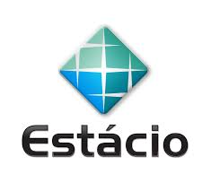

Edital oficial 2026.1 | Campus Via Corpvs

Laboratório de Transformação Digital - LTD
EDITAL Nº 01/2026.1
Processo Seletivo de Monitores
Centro Universitário Estácio do Ceará Campus Via Corpvs
O edital é exclusivo para estudantes do Campus Via Corpvs e apresenta as condições oficiais para seleção de monitores voluntários do LTD no período letivo 2026.1.
Página oficial do processo seletivo de monitores do LTD.
Baixar PDF oficialVisão rápida
Informações essenciais do edital
Os pontos mais importantes do processo seletivo organizados em um bloco visual simples, claro e direto.
Edital completo
Estrutura oficial do processo seletivo
O conteúdo abaixo apresenta, em formato web, todas as disposições do edital Nº 01/2026.1 do Laboratório de Transformação Digital - LTD.
Cronograma
Etapas e datas do processo seletivo
Acompanhe as fases principais do edital e planeje sua participação no prazo correto.
Distribuição de vagas
18 vagas para o Campus Via Corpvs
As vagas de monitoria são exclusivamente destinadas ao Campus Via Corpvs, distribuídas entre os três turnos acadêmicos.
Responsáveis
Equipe institucional do edital
A condução do processo seletivo está vinculada ao Laboratório de Transformação Digital - LTD e à coordenação dos cursos da área de Tecnologia da Informação.
Inscrição
Garanta sua participação no processo seletivo
Candidate-se para atuar no LTD, participar de projetos de inovação, extensão e tecnologia e ampliar sua vivência acadêmica no campus.
Inscreva-se agora